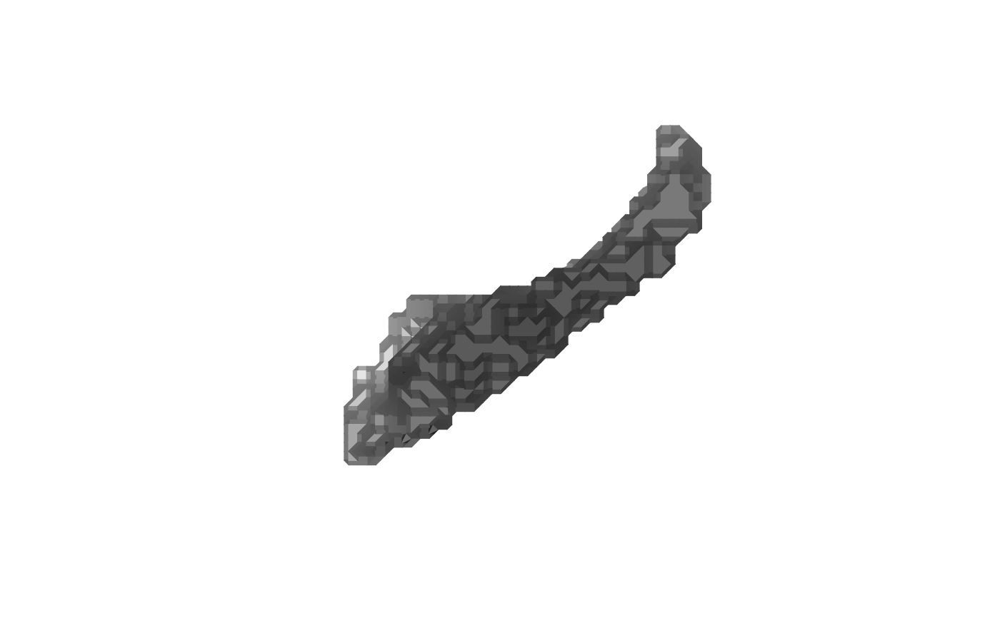
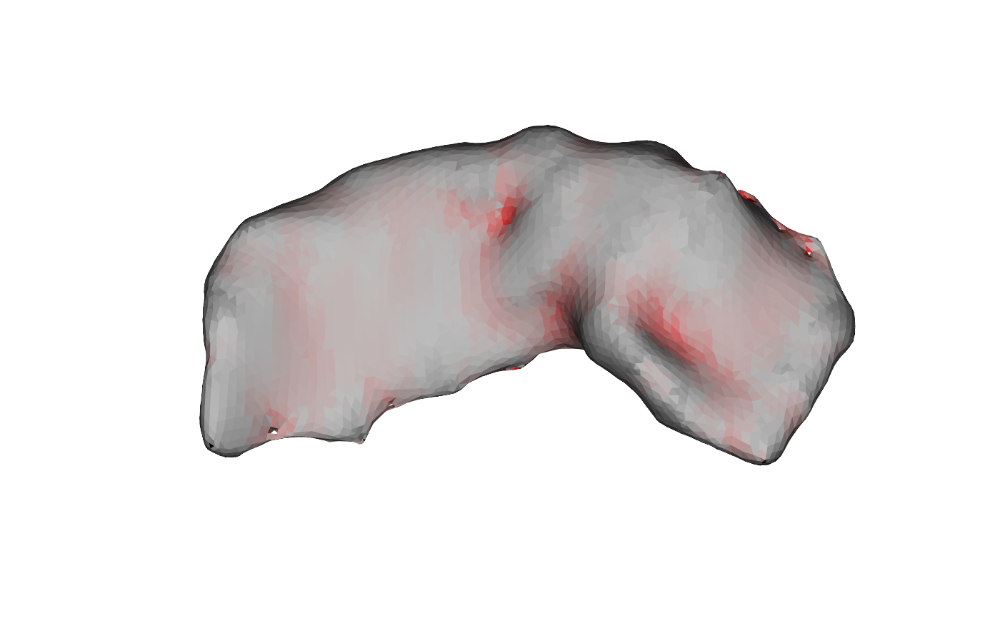

Estimates, at every vertex of a closed triangular mesh, the local mean curvature, Gaussian curvature, and the two principal curvatures, by fitting an osculating quadratic surface to each vertex's neighborhood.
Arguments
- mesh
triangular mesh of class
'mesh3d'(or coercible viaensure_mesh3d). The mesh must be closed, manifold, and genus-0 (watertight, no boundary or non-manifold edges, single connected component);mris_curvatureraises an error if such defects are detected- verbose
logical; print progress messages. Default
FALSE
Value
A named list of four numeric vectors, each of length
ncol(mesh$vb) (one entry per vertex, in vertex order):
meanMean curvature \(H = (k_1 + k_2)/2\).
gaussianGaussian curvature \(K = k_1 k_2\).
k1First principal curvature (\(k_1 \geq k_2\)).
k2Second principal curvature.
Details
For each vertex, the function:
builds an orthonormal tangent frame \((e_1, e_2, n)\), where \(n\) is the vertex's (already-computed) unit normal;
expresses each neighbor's offset from the vertex in this frame as tangential coordinates \((u, w)\) and a height \(h\) above the tangent plane along \(n\);
fits, by least squares over the vertex's 2-ring neighborhood, the osculating
paraboloid\(h = a u^2 + b u w + c w^2\);derives the mean curvature \(H = a + c\), the Gaussian curvature \(K = 4ac - b^2\), and the principal curvatures \(k_{1,2} = H \pm \sqrt{\max(H^2 - K,\ 0)}\).
Because the tangent frame is orthonormal and the paraboloid is fitted with
zero gradient at the vertex (by construction, since \(n\) is the fitted
normal direction), these are exactly the eigenvalues of the second
fundamental form, i.e. the principal curvatures.
The sign of the result follows the orientation of the per-vertex outward
normal: a locally convex ('gyrus-like') patch, where neighbors lie
toward the surface's interior relative to the outward normal, has negative
mean curvature, while a locally concave ('sulcus-like') patch has
positive mean curvature. For example, a sphere of radius \(r\) with outward-pointing
normals has uniform curvature \(H = -1/r\) and \(K = 1/r^2\) everywhere.
Vertices whose 2-ring neighborhood is degenerate (fewer than three
neighbors, or neighbor offsets that do not span the tangent plane, e.g.
nearly collinear) are reported with all four curvature values set to zero.
References
Cortical surface-based analysis II: Inflation, flattening, and a surface-based coordinate system. NeuroImage, 9(2), 195-207 (1999).
Examples
if (is_not_cran()) {
data("left_hippocampus_mask")
mesh <- vcg_isosurface(left_hippocampus_mask)
plot(mesh)
# Fix defects
mesh <- vcg_fix_defects(mesh, verbose = TRUE)
# Smooth
smoothed <- mris_smooth(mesh, verbose = TRUE)
res <- mris_curvature(smoothed)
range(res$k1)
col <- color_ramp_continuous(
res$k1, clim = c(-1, 1), alpha = TRUE,
cmap = c("black", "gray", "red"))
plot(smoothed, col = list(col),
eye = c(-100, 100, 0), up = c(0, 0, 1))
}

#> vcgFixDefects: input nv=4318 nf=8652, boundary edges=40, non-manifold edges=0
#> vcgFixDefects: [1] removed degenerate/duplicate faces -> nv=4318 nf=8652
#> vcgFixDefects: [2] merged 0 close vertices -> nv=4318 nf=8652
#> vcgFixDefects: [3a] topology/normals ready, starting hole fill (max_hole_size=100)
#> vcgFixDefects: [3b] filled 10 hole(s) -> nv=4318 nf=8672
#> vcgFixDefects: [4] removed unreferenced vertices -> nv=4318 nf=8672
#> vcgFixDefects: [5a] topology rebuilt, orienting coherently
#> vcgFixDefects: [5b] oriented=1 orientable=1
#> vcgFixDefects: removed/merged 0 vertices (tol=9.97168e-05), filled 10 hole(s)
#> vcgFixDefects: output nv=4318 nf=8672, boundary edges=0, non-manifold edges=0, oriented=yes, orientable=yes, normals_flipped_outward=no
#> mris_smooth: building adjacency for 4318 vertices, 8672 faces
#> mris_smooth: pass 1/1: averaging vertex positions over 10 iterations
#> mris_smooth: done
